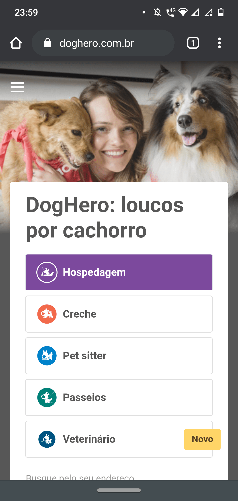
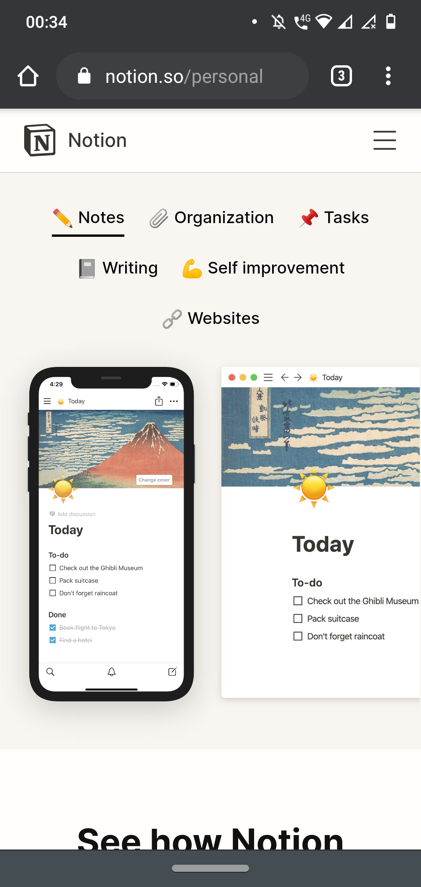

REPETITION

Dog Hero
DOG HERO WEBSITEWe can see here the image fill all the space on the background. The menu is kind of hide in the left, and all the main information is on the middle. In this main part, we can find a good example of alignment and proximity. But the base is the Repetition that we can see in the buttons in the middle of the page.
CONTRAST
UBER
UBER WEBSITEThe Contrat it is pretty evident on this webpage. Uber in general use neutral colors. The black and white are the most common contrast we can see. We can see a type of Repetition in the text and in the icons that were choose.
White Space

NOTION
NOTION WEBSITEWhite Space and Clean Design is the principle we can find on Notion. That's have been my favorite app/website from the lasts times. I love the clean design they use and how flexible the site is. The Repetition is a principle here too, as the contrast.